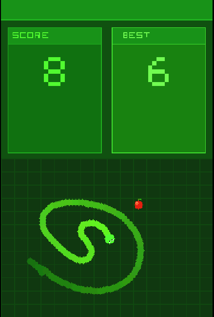
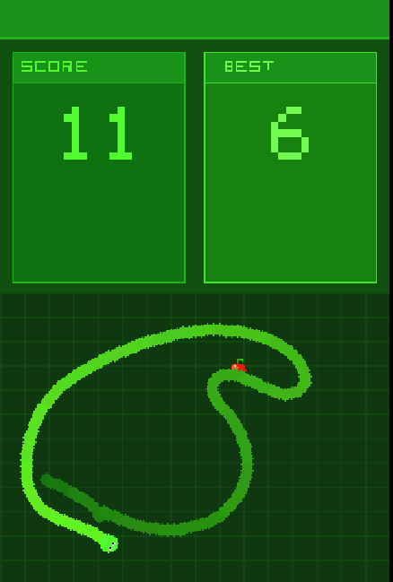
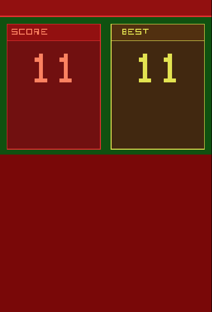

Smooth Snake
This is a game that uses the Nintendo DS' touchscreen. It is a remake from a Flash game I played growing up that has been taken offline since Flash was discontinued. Instead of grid-based movement, the snake follows the stylus smoothly. In the original game the snake followed the players mouse and this made is so unique. I wanted to recreate this game and always be able to have a way play it so I built it in C with no engine for the Nintendo DS as I thought the touchscreen would work well in place of using a mosue to control the snake.
Design goals
The core loop is built around self-inflicted difficulty. I used Garneau's 14 Forms of Fun to pick the three types of fun the game is built on and every design decision serves them.
- Advancement & Completion: Players will be satisfied as the score climbs and snake grows longer
- Application of Ability: The player has to maneuver around the snake’s body to get apples. Players need to plan their path in order to avoid trapping themselves.
- Thrill of Danger: The constant risk of hitting the snake’s own body creates genuine tension, especially as the game progresses
Stylus movement
Result: The snake follows the stylus fluidly instead of moving on a grid. You can guide the snake using a stylus on the touchscreen. As the game gets harder and you have to guide the snake out of a gap, it is your own skill and precision that matters.
Problem: The way the snake followed the mouse was the whole identity of the original Flash game. A grid-based snake would have been much easier to build but it would have been a completely different game. The movement had to be right.
Solution: Each body segment is placed an exact fixed distance behind the one in front of it. I tested the touchscreen controls to make sure skilled players could guide the snake through any gaps.

Difficulty that builds itself
Result: The game gets harder without any levels, timers or enemies. Early play is relaxed as the snake is tiny but late play demands real precision as the player has to navigate around the snake's own body. This shift happens slowly as players eat apples.
Problem: I wanted the game to have escalating tension but without adding artificial difficulty like countdown timers or enemies that would make it feel less like the original game.
Solution: Every apple grows the snake so the player's own success shrinks the safe space on screen. As the player gets points they build their own danger. The only way to lose is by eating yourself which keeps every game over feeling fair as it can only happen due to a player's actions.


Iteration
The body movement went through some changes. My first approach was to let each segment of the snake drift toward the one ahead of it. It looked fine with a short snake but as soon as the snake became long, the tail couldn't keep up and there was visible gaps in the snakes body. Since precise controls are really important especially late game when the snake is bigger it was the worst possible time for the visuals to be unreliable. I replaced it with exact placement so each body segment sits precisely a fixed distance behind the one in front. Once I had this perfected, there was no more glitching and the player could trust what they could see.
What I learned
Taking time to debug and fix all of the visual and control issues I had with the snake was the right call. The silky smooth movement is essential to the game and I'm glad that it survived the port. Next time I'd put background music in the project.